Your servers, network, power and services on one calm screen. This guide walks through every page with a sample lab, from signing in to patching cables in the rack.
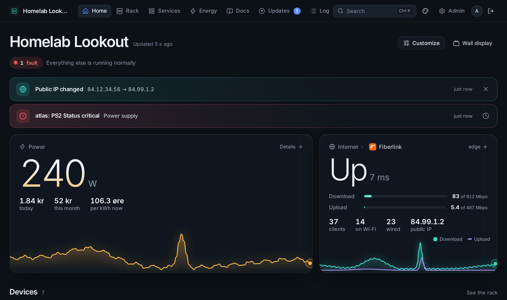
Version 2026.10 · All names, numbers and addresses in this guide are sample data.
Contents
What's inside
Homelab Lookout reads your equipment and shows how it is doing. It never changes anything on a device: there is no button that restarts, switches off or updates hardware. You can leave it on a wall screen or hand the link to a family member without worrying.
PowerWhat the lab draws now, what it costs today and this month, with your own tariff.
NetworkInternet up or down, traffic, clients, your provider and public IP.
HardwareEvery device drawn as it looks, with its live lights, problems and history.
1Getting startedSign in, trust the certificate, install the app
2Finding your wayMenus, search and your own look
3HomeProblems, power, internet and devices
4Rack and patch cablesThe rack drawn to scale, cabling it
5ServicesYour apps and virtual machines
6Energy reportkWh and cost per day, month and device
7Docs, Updates and LogDocumentation, what's outdated, what changed
8Wall displayA screen for the wall
9Admin: devicesThe catalog, connections, the rack
10Admin: servicesCards, integrations, numbers
11Admin: alerts, power, lookNotifications, tariffs, themes, logo
12Admin: system and backupsWeb server, backups, remembered devices
13Keeping it safeGood habits
14When something doesn't workCommon problems and fixes
About the sample lab. The screenshots show an example setup: a UniFi gateway (edge), a 24-port switch (core-switch), two Dell servers (atlas with Proxmox, vault with TrueNAS), a patch panel, an access point, two cameras and twelve services. One power supply in atlas is failing on purpose, so you can see how problems look.
Chapter 1
Getting started
Lookout runs on one machine in your lab and you open it in a browser, for example https://lookout.home.arpa:8443. Ask whoever installed it for the address and the admin login.
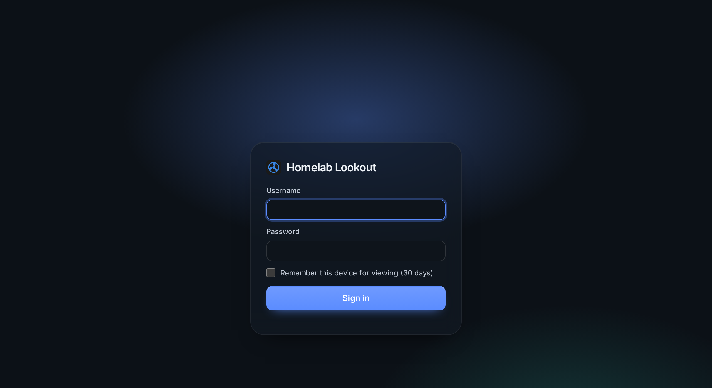
Sign in. Tick Remember this device for viewing on your own phone or wall tablet.
Sign in
Enter the admin user name and password. After five wrong passwords you have to wait, first 30 seconds, then longer each time, up to an hour.
A login lasts 2 hours without use and 12 hours at most.
Remember this device
For 30 days, that device can look at every page without the password, but it can't change anything. Admin always asks for the password. Log out makes the server forget the device.
Trust the certificate (once per device)
Lookout makes its own small certificate authority, so the browser warns you until the device trusts it. Download it from /ca.crt or Admin → System → Download CA certificate, check the fingerprint against the one shown under Certificate, and import it:
Device
How
iPhone / iPad
Open the file → Settings → Profile Downloaded → Install. Then General → About → Certificate Trust Settings → turn it on.
Android
Settings → Security → Encryption & credentials → Install a certificate → CA certificate.
Double-click → Keychain Access (System) → open the certificate → Trust → Always Trust.
Linux
Copy to /usr/local/share/ca-certificates/ and run sudo update-ca-certificates.
The certificate authority can only vouch for this one server, so trusting it doesn't let it pretend to be other websites.
Install it as an app
Trust the certificate first (above).
Android: Chrome menu ⋮ → Install app. iPhone: Safari → Share → Add to Home Screen. PC: the install icon at the end of the address bar.
Open the app and sign in with Remember this device ticked. On an iPhone, sign in inside the app.
When the server can't be reached, the app says Can't reach the dashboard and opens by itself once it is back.
Chapter 2
Finding your way
The pages are in the bar at the top: Home · Rack · Services · Energy · Docs · Updates · Log. On the right are Search, the look button, Admin and Log out.
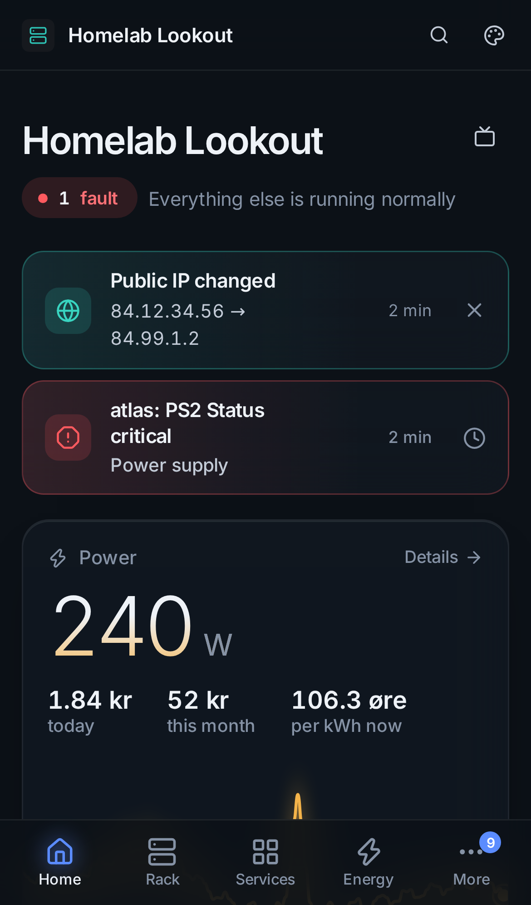
Phone. The tab bar at the bottom has Home, Rack, Services and Energy.
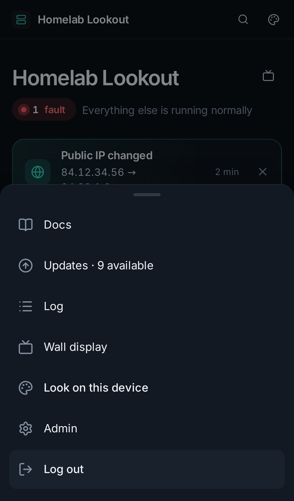
More has Docs, Updates, Log, the wall display, the look, Admin and Log out.
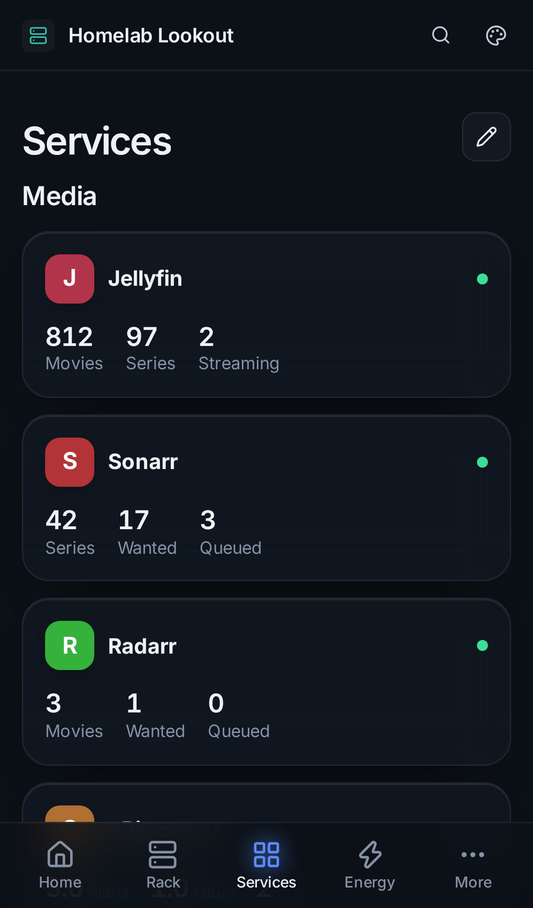
Every page works on a phone, one column at a time.
Docs and Updates appear when you're signed in or on a remembered device. Log and Admin are for the admin only.
Search
Press Ctrl K or / anywhere. It finds devices, services, VMs, Docs sheets and pages (including the text inside them), IP reservations and settings. Use ↑ ↓ to choose, Enter to open and Esc to close.
Your own look
The palette button changes the look on this device only: Auto, Dark, Light, more themes and an accent colour. Everyone else keeps the owner's look from Admin. Use the owner's look goes back.
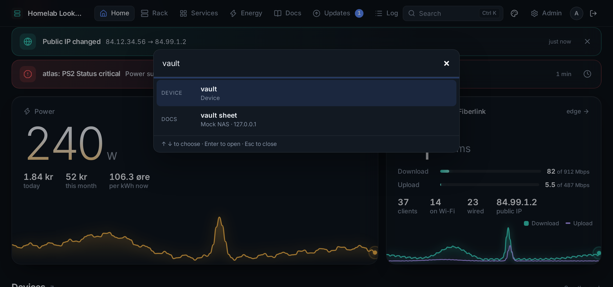
Search for vault: the device and its Docs sheet.
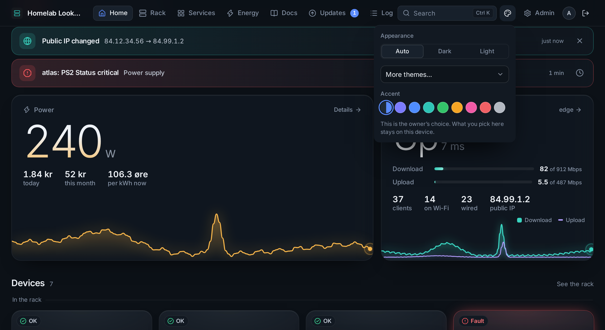
The look menu, for this device only.
Chapter 3
Home
Home answers one question: is everything all right? It shows problems first, then power and the internet, then every device drawn the way it looks.
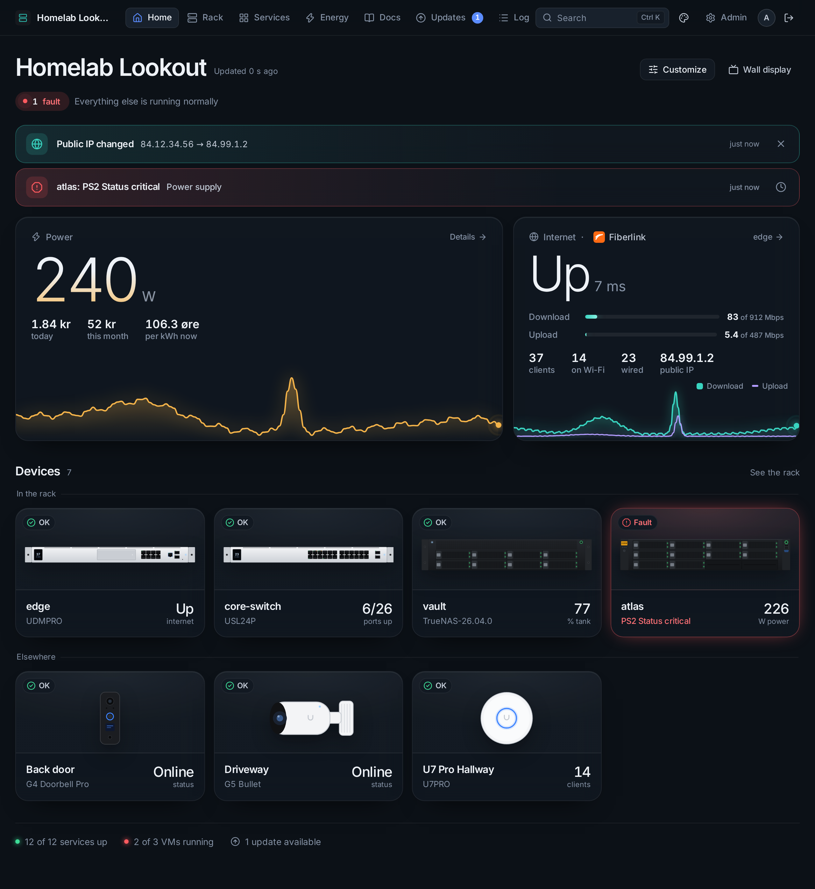
Home in the sample lab: a public IP change, one faulty power supply, the power and internet cards, and the devices.
At the top: the summary and "Needs you"
The pill says how many faults and things to watch there are, or All normal. Below it, one row per problem, worst first, with how long it has been going on. Click a row to open the device. A connection that stops answering is listed only after 2 minutes, so a single slow reading doesn't raise an alarm.
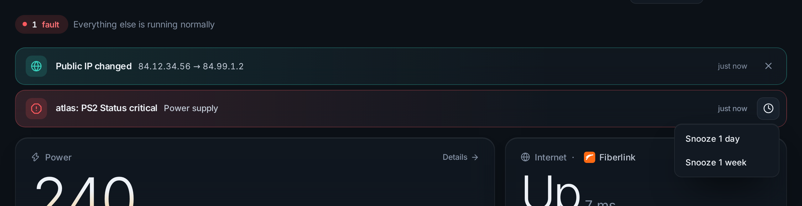
Snooze. The clock button on a row hides it for 1 day or 1 week, for everyone. The teal row is a notice that your public IP changed; × closes it.
Snooze (admin): the problem leaves the top of Home and the wall display, but the device still shows it and alerts are still sent. A warning that turns into a fault comes back by itself. N snoozed · Show lists them; the bell ends a snooze.
Public IP changed: shown until an admin closes it. It stays in the Log.
Power and Internet
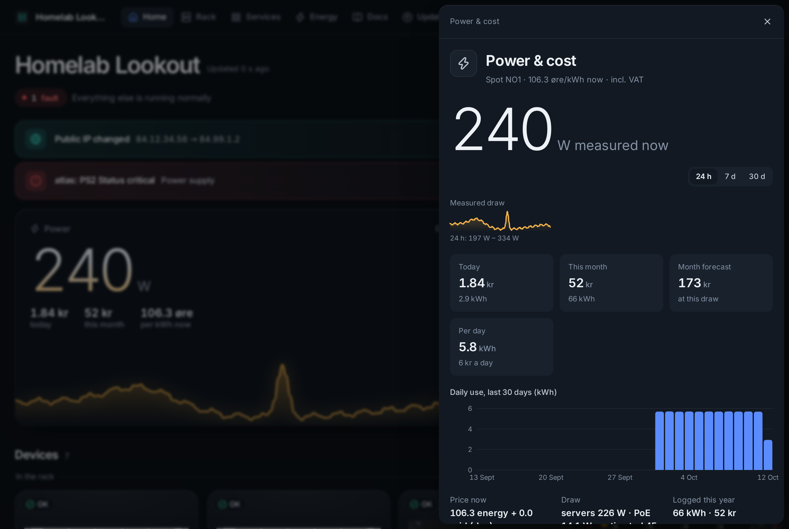
Power details: today, this month, the forecast, cost per day and the yearly figures.
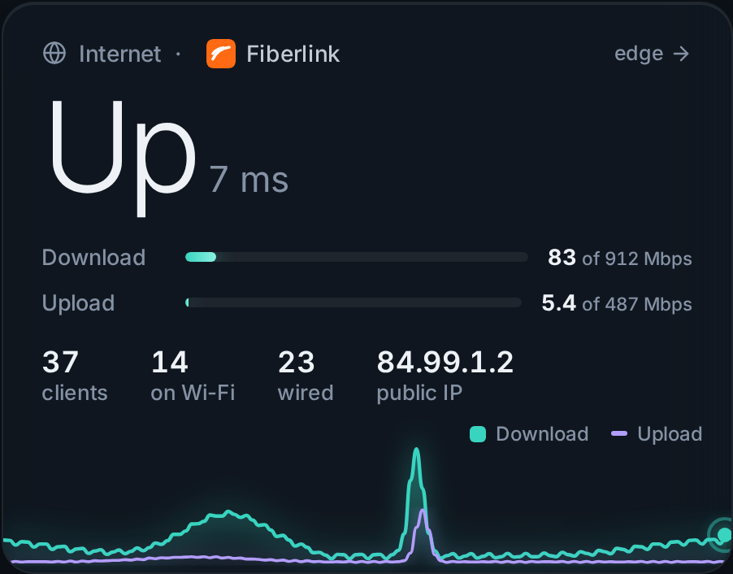
Internet: traffic now against your speed test, the last 24 hours (download filled, upload violet), clients, provider and public IP.
Power shows what the lab draws now, today's and this month's cost, and a graph of the last 24 hours. Click it for the details and a link to the Energy report; the range buttons (24 h / 7 d / 30 d) in the details are remembered in your browser.
Internet comes from your gateway (UniFi or Omada). Next to the heading are your internet provider and its logo; the public IP is only shown to people who are signed in.
Devices and their details
Each device has a tile with its drawing, one status (OK, Warning, Fault or Offline), its worst problem or model, and one key number. Click a tile for the details: problems first, then numbers, graphs, power supplies, fans, drives, ports and VMs, with buttons for its Docs sheet and Admin.
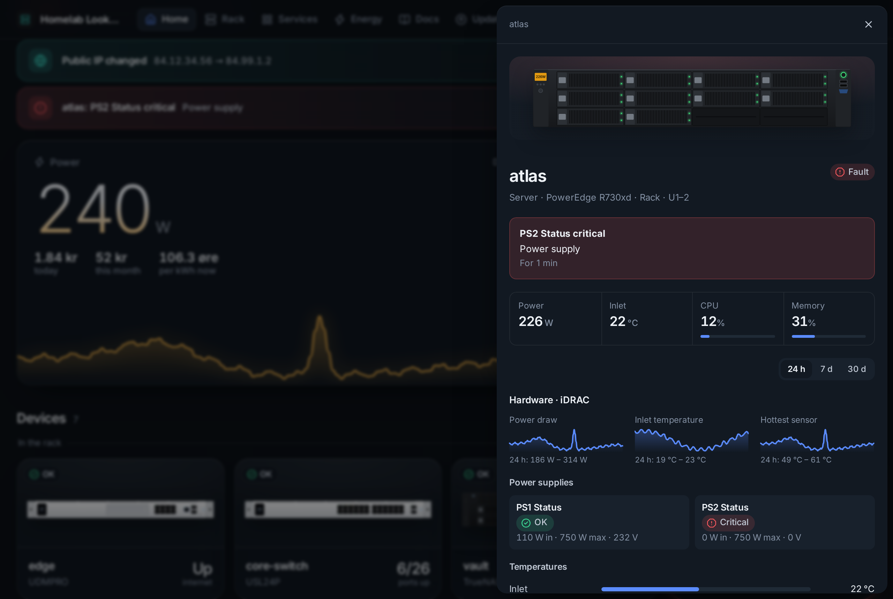
Details for atlas: the failing power supply first, then power, temperature, CPU and memory with their graphs.
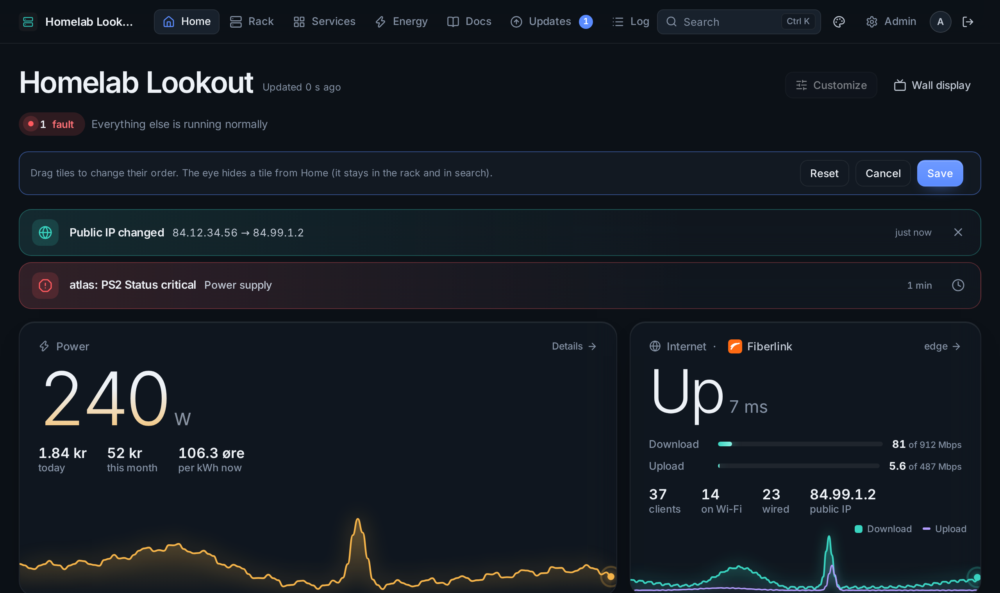
Customize (admin): drag tiles into another order and hide the ones you don't need.
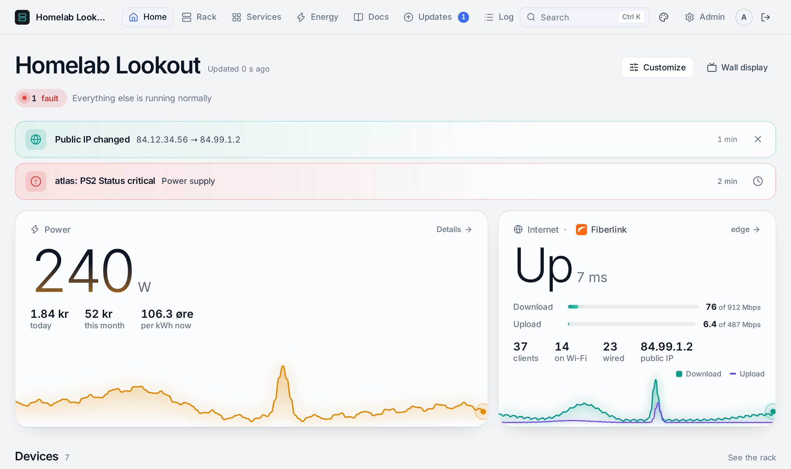
The same Home in the light theme. Every theme has the same layout.
One quiet line at the bottom counts services up, VMs running and updates available. Each is a link.
Chapter 4
Rack and patch cables
The rack is drawn to scale with live lights: the drives your servers really have, switch ports lit by link and PoE, status LEDs. A device with a problem gets a red or amber outline.
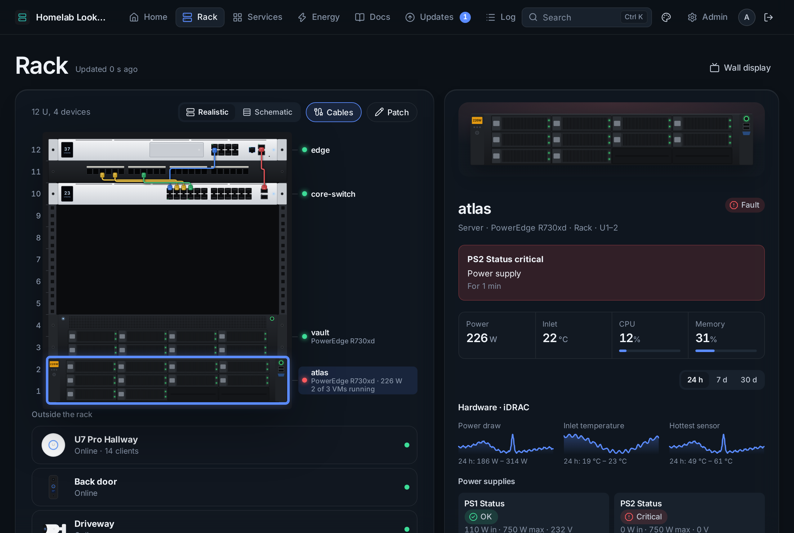
The Rack page with cables shown. On a wide screen, the chosen device's details stand beside the rack.
Realistic / Schematic switches between the drawing and plain blocks with names, status and power.
Click a device to see its details. Devices outside the rack (access points, cameras) are listed below it.
Patch cables
Cables shows or hides the patch cables in your browser. They are off at first, so the rack stays clean.
To draw them, sign in and press Patch:
Pick a colour in the bar above the rack.
Click a port on a switch, gateway or patch panel.
Click the port at the other end. The cable is saved.
Click a cable to change its colour, add a label, or Remove it.
Done leaves patch mode.
Cables run along their own lane between the devices, with a plug in each port. Point at one to see both ends and its label.
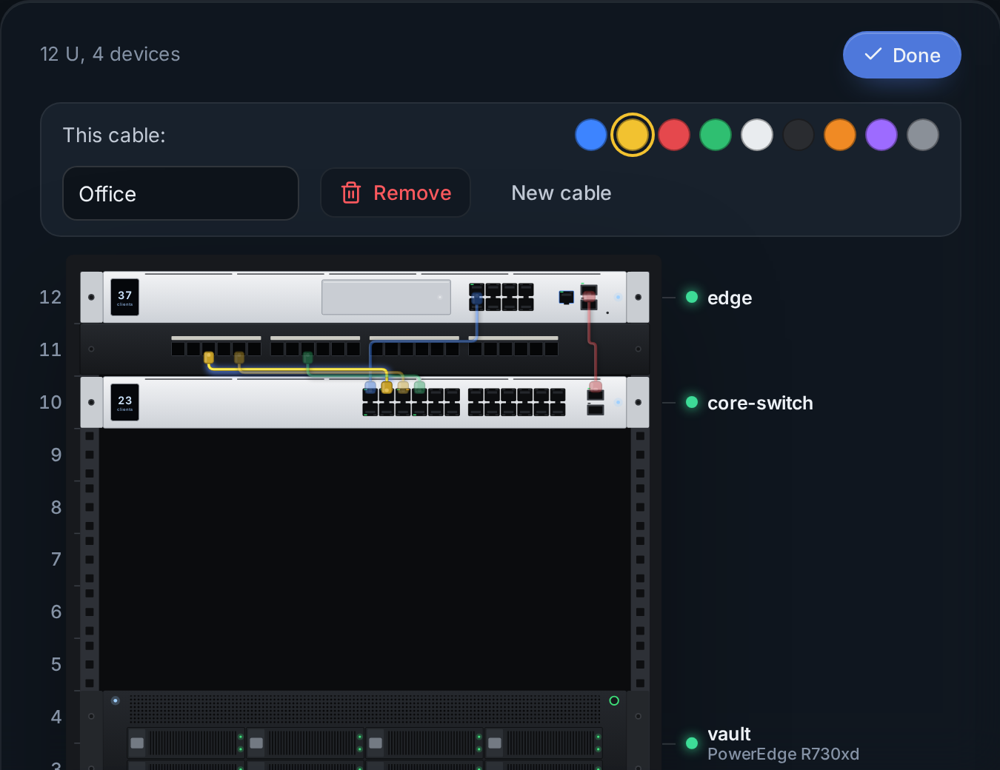
Patch mode with a cable picked: its colour, label and Remove.
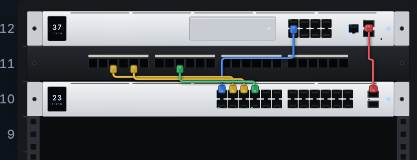
Close-up: the gateway to the switch (blue, red for the 10G link) and three runs from the switch to the patch panel.
Every cable change is written to the Log. Removing a device or patch panel from the rack also removes its cables. The wall display shows cables when you tick Patch cables in its Customize panel.
Chapter 5
Services
Your self-hosted apps, grouped the way you like, each with a status dot and up to four live numbers. Click a card to open the app.
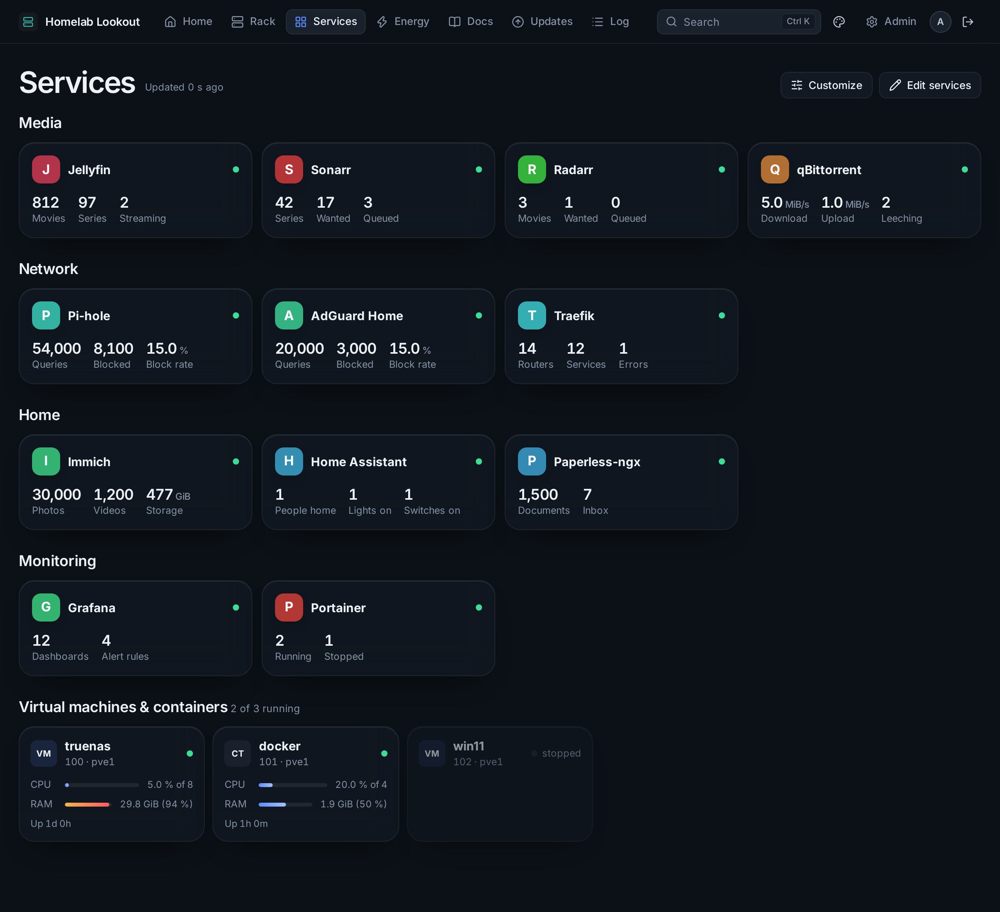
Services in four groups, then the virtual machines and containers from Proxmox with CPU, memory and uptime.
The dot is green when the app answers; point at it for the response time.
The numbers come from each app's integration: movies and series in Jellyfin, queued downloads, blocked queries, photos in Immich, and so on.
Customize (admin) drags services between groups, renames groups, sets columns and hides services.
Chapter 6
Energy report
How much the lab used and what it cost, per day or per month, split per device, priced with your own electricity plan and grid tariff.
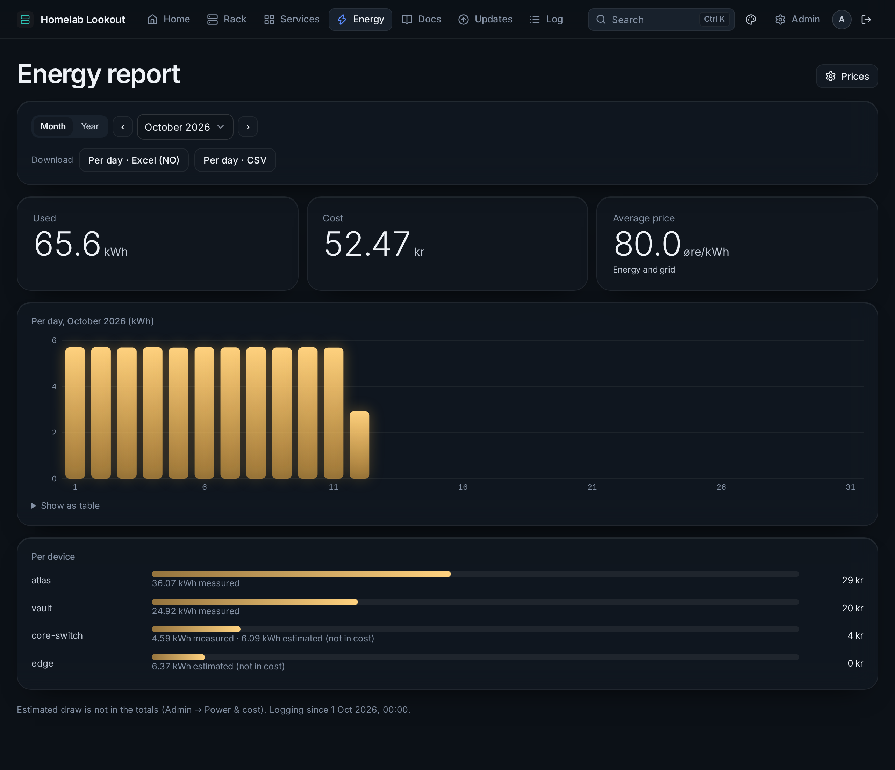
October in the sample lab: kWh, cost and average price, a bar per day, and each device's share.
Month / Year switches between days in a month and months in a year; ‹ › step through periods.
Point at a bar for that day. Show as table gives the same numbers as a table.
Per device separates measured power (from server controllers and PoE) from estimates you entered.
Downloads:Excel (NO) opens straight in Norwegian Excel; CSV is for everything else.
Chapter 7
Docs, Updates and Log
Docs
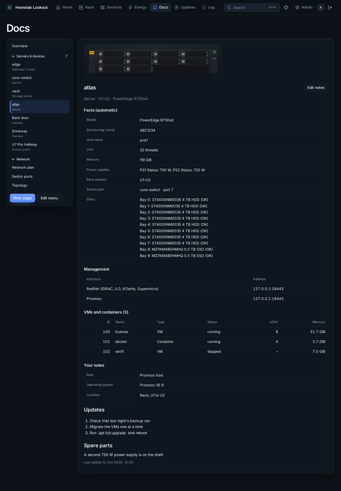
The server sheet for atlas: facts read automatically, then your own notes.
Server sheets: model, serial, CPU and memory, disks, rack position, addresses and switch port fill in by themselves. Edit notes adds your own.
Network plan: networks and IP reservations, importable from UniFi.
Pages: your own pages in Markdown, with a history of the last 50 versions and Recently deleted.
Edit menu arranges the menu in groups.
Docs are not for passwords. Link to your password manager instead.
Updates
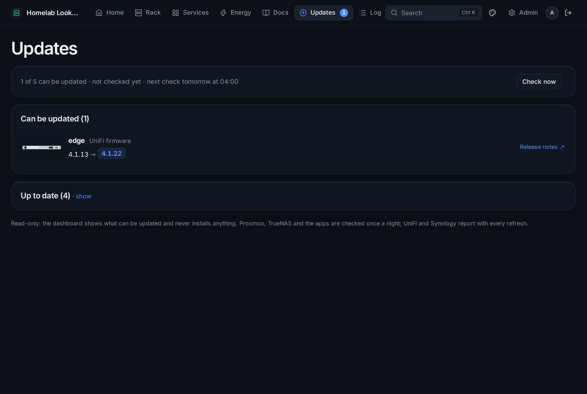
Updates: installed and new versions, with release notes.
One list for Proxmox, TrueNAS and its apps, UniFi firmware, Synology and most services. It is checked every night; Check now checks right away.
Nothing is ever installed from Lookout. Update on the device itself, then press Check now.
Log
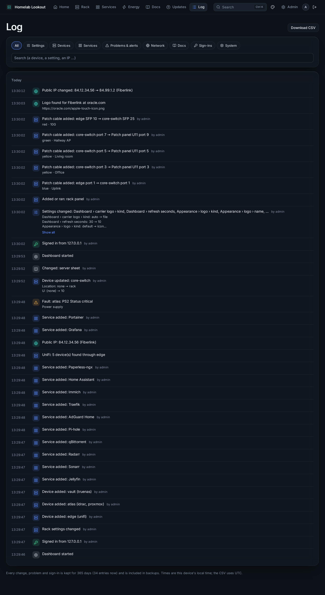
The Log: every change, with what changed and who did it.
Everything that happens, newest first, grouped by day: changes in Admin and Docs (Title: Homelab → My Lab), devices found, problems starting and clearing, notifications sent, snoozes, IP changes, patch cables, sign-ins, update checks and backups.
Filter by category, search, and Download CSV. Entries are kept for a year and go into backups. Passwords are never written to it.
Chapter 8
Wall display
One screen for a tablet or TV, readable from across the room. Open it from Wall display on Home, or at /wall.
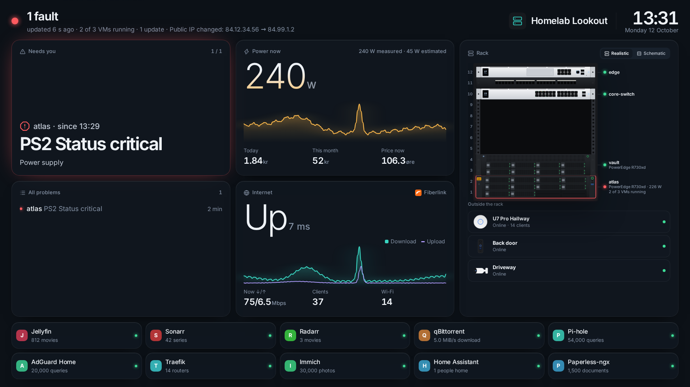
The wall at 1920 × 1080: the headline and logo, the problem in focus, power, internet, the rack and the services along the bottom.
Needs you shows one problem at a time, eight seconds each, with the full list beside it.
The buttons by the clock fade out when nobody touches the screen; touch it or move the mouse to bring them back.
Tap anything to open it on Home. The full-screen button keeps the screen awake where the browser allows it.
For a wall tablet, sign in once with Remember this device; it then shows the wall without a password and can't change anything.
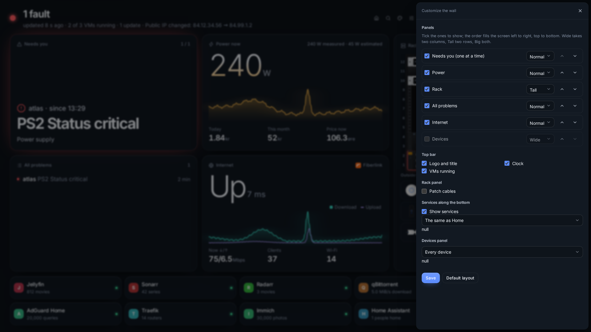
Customize (admin): choose panels, their order and size (Normal, Wide, Tall, Big), the top bar, patch cables, and which services and devices to show.
Chapter 9
Admin: devices
Admin has six tabs: Devices · Services · Alerts · Power & cost · Dashboard & look · System. Passwords, tokens and keys are entered here and nowhere else; they are stored encrypted and never shown again.
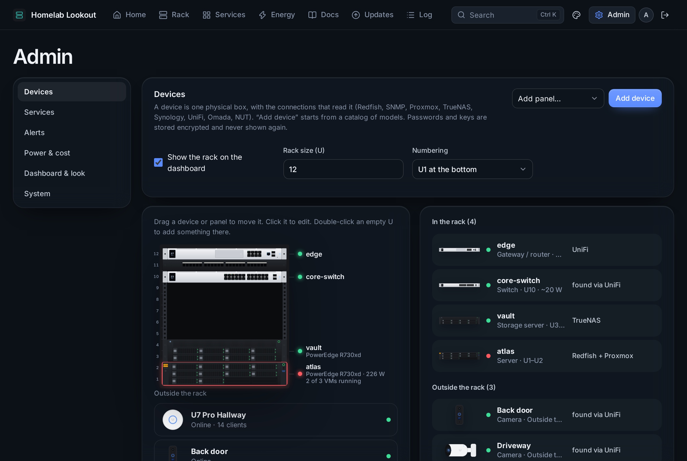
Devices: the rack editor on the left (drag to move, double-click an empty U to add a panel) and every device on the right.
Add a device from the catalog
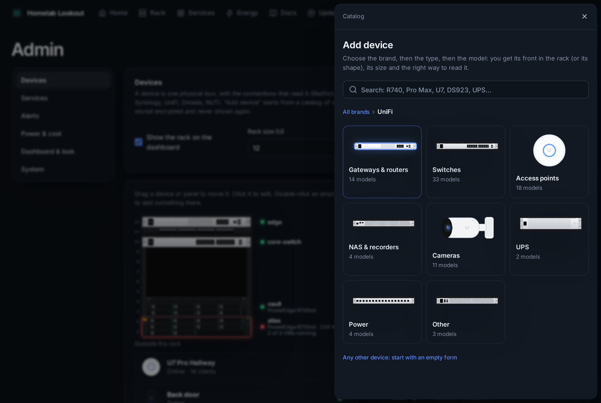
The catalog: brand, type, model. About 165 models, each drawn as it looks.
Press Add device.
Choose the brand, then the type, then the model. Search works from any step.
Add this device fills in the size, front, drive bays, typical power and the right connection.
Give it a name, fill in the connection, press Test, then Save device.
UniFi switches, access points and cameras appear by themselves once the console is added.
Connections
Each device can have one or more ways to read it. Use read-only accounts everywhere.
Connection
For
What to create on the device
Redfish
Dell iDRAC, HPE iLO, Lenovo XClarity, Supermicro
A local user with a read-only role
Proxmox
Proxmox VE
A user with role PVEAuditor and an API token
TrueNAS
TrueNAS 25.04+
An API key for a Read-only Administrator
Synology
Synology DSM
SNMPv3 with SHA and AES
UniFi
UniFi OS consoles
A local View Only user without MFA
SNMPv3
Cisco, Aruba, MikroTik, Netgear, QNAP, UPS cards
A read-only SNMPv3 user with SHA and AES
NUT
A USB UPS
NUT's upsd listening on the network
Omada
TP-Link Omada
A local Viewer on the Omada controller
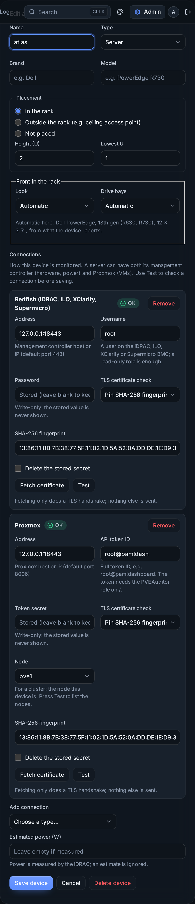
Editing atlas: where it sits, how it's drawn, and its two connections.
Self-signed certificates
Choose Pin SHA-256 fingerprint and press Fetch certificate. Lookout checks the fingerprint before sending the password. If it changes later (a firmware update), the device stops with fingerprint mismatch; nothing was sent. Find out why, then fetch and save the new one.
More
Estimated power for devices without a power sensor.
In the rack with height and lowest U, outside the rack, or not placed.
Look and Drive bays change the drawing when Auto guesses wrong.
A desktop NAS goes on a shelf in the rack.
Chapter 10
Admin: services
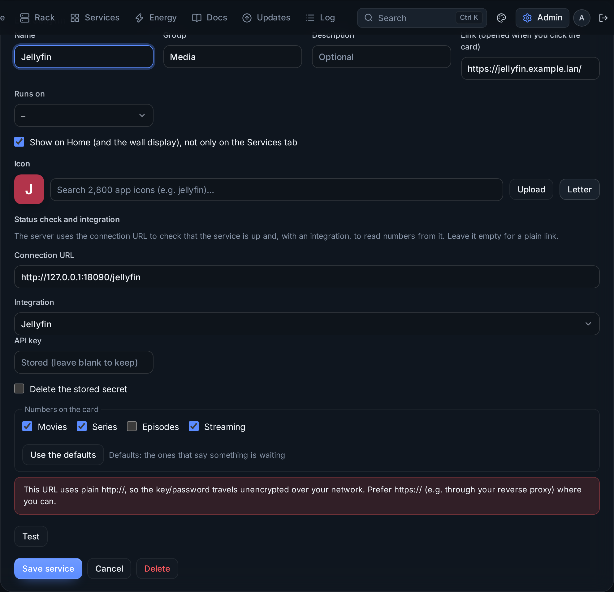
Editing Jellyfin: name, group, link, icon, connection and integration.
Add service, then a name, group and the link the card opens.
An icon: search 2,800 app icons, upload your own, or use a letter.
The Connection URL for the status check (can be an internal address).
The integration and its API key, then Test.
Pick up to four numbers for the card and Save service.
Over plain http:// a key travels unencrypted on your network; the form warns you.
Infrastructure cards
Integration
Numbers from
Shows
TrueNAS
A TrueNAS device you added, or its own URL and key
Alerts, unhealthy pools, space
Synology DSM
A Synology device, or DSM's login
Volume used, CPU, memory, temperature
UniFi Network
A UniFi console, or its own login
Clients, WAN, devices offline, speed test
UPS / PeaNUT
A UPS you added, a NUT server, or PeaNUT
Charge, runtime, load, on battery
Tailscale
A read-only API token
Devices online, keys about to expire
Chapter 11
Admin: alerts, power and look
Alerts
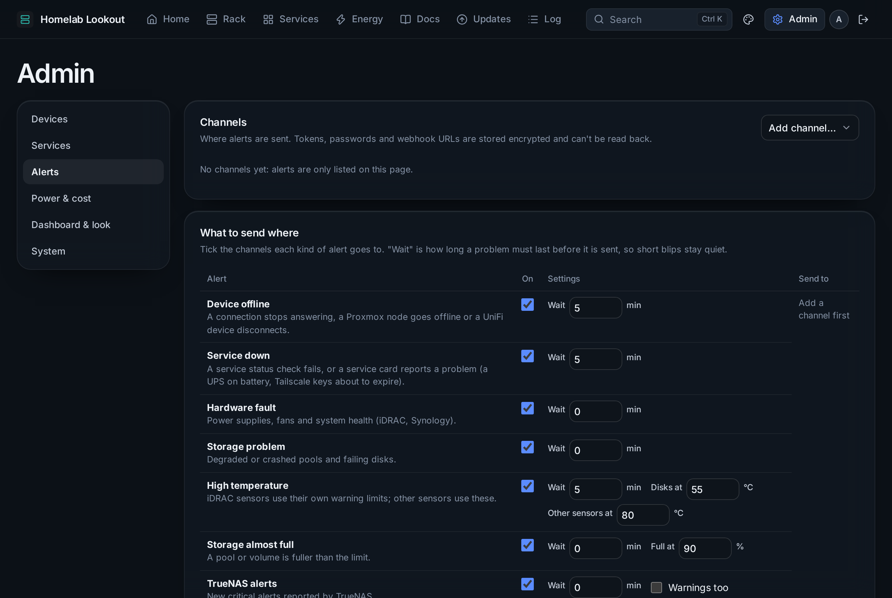
Alerts: channels, and what to send where.
Add a channel: ntfy, Telegram, Discord or e-mail. Press Test.
For each alert type (offline, service down, hardware, storage, temperature, space, power, backup), pick the channels and a wait time so short blips stay quiet.
Choose whether to send a message when it clears, and reminders.
At most 30 messages go to one channel per hour.
Power & cost
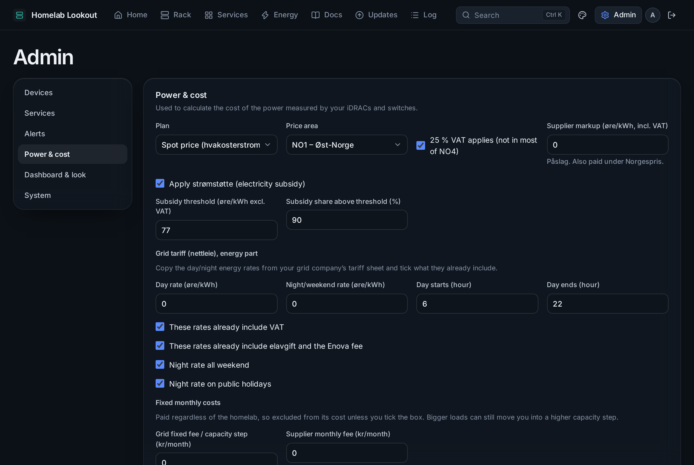
Power & cost: your plan, price area and grid tariff.
Choose Norgespris or spot price with your price area, VAT, markup and subsidy. Enter your grid company's day and night rates, the fixed monthly costs and fees.
Include estimated power in cost decides whether devices without a sensor count.
Dashboard & look
Title, internet provider and refresh interval.
Provider logo: found automatically from who owns your public IP, or upload one, paste a link, or none.
Services on Home: one line with the count, tiles, a compact list, only the ones down, or off.
VMs and containers: where they show and with which numbers.
Theme (21) and accent: the default look for everyone.
Logo: the default, a built-in icon in a colour, or your own image (PNG, JPEG, WebP or SVG).
Background image or gradient, blur, dimming and card opacity.
Keep "Make the dashboard public" off unless you really mean it: it shows Home, the rack and services to anyone who can reach the server.
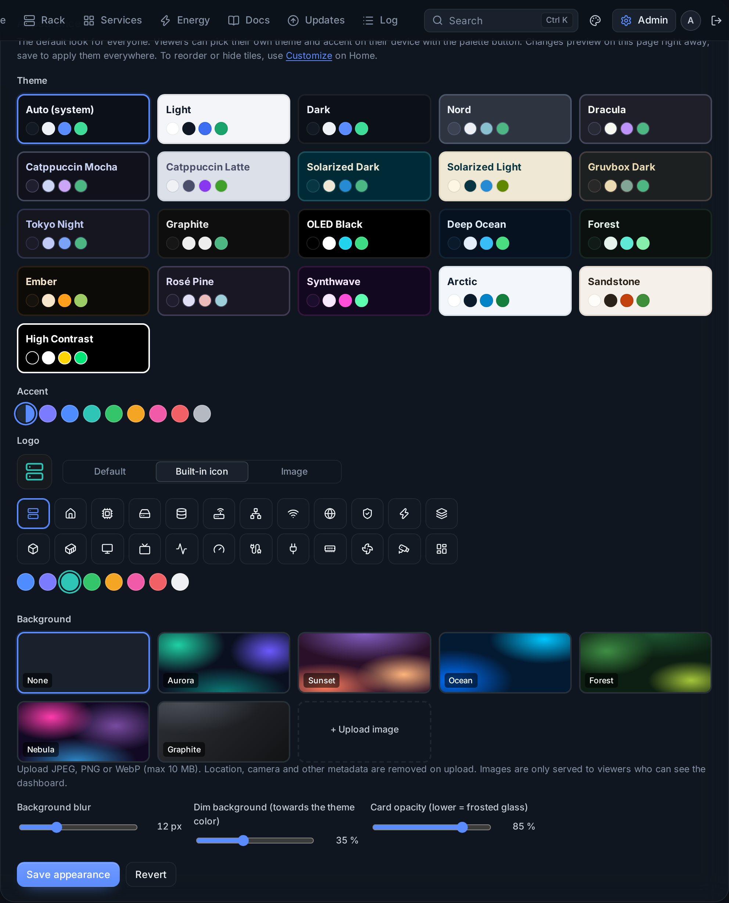
Appearance: theme, accent, logo and background, previewed live.
Chapter 12
Admin: system and backups
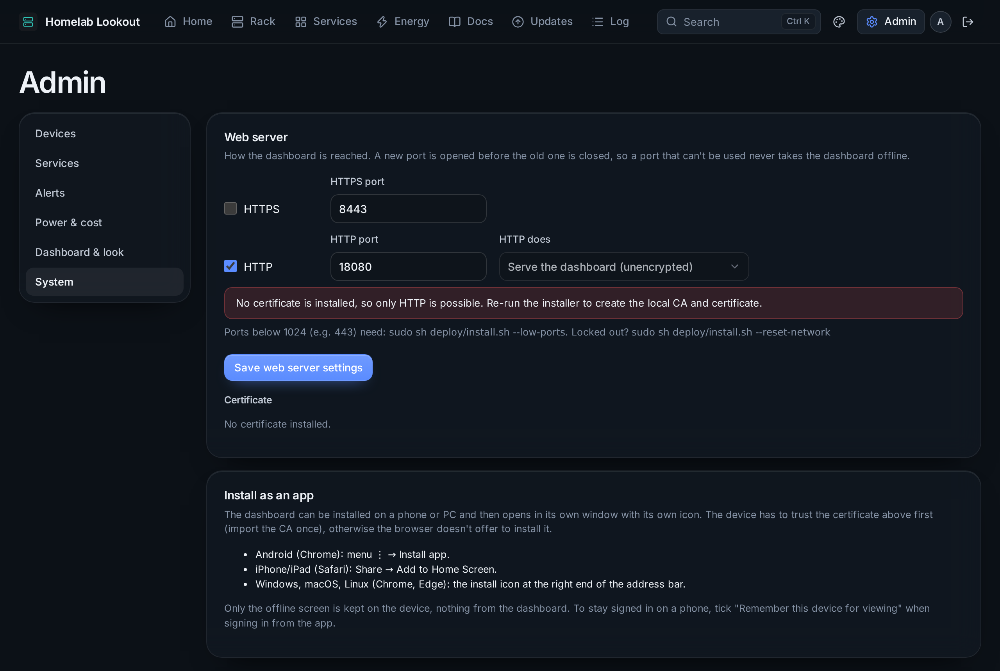
System: the web server and certificate, backups and remembered devices.
Web server: the HTTPS and HTTP ports. Keep HTTP on Redirect to HTTPS. Certificate shows what it covers and when it expires.
Download now gives one encrypted file with everything, including all passwords. Choose a passphrase of at least 12 characters and keep it in your password manager.
Restore reads such a file; the current state is saved first.
Automatic backups run daily and can also go to a NAS folder, S3 storage or another machine over SSH.
Admin password: changing it signs out every other session and remembered device.
Remembered devices: see which phones and tablets can view without a password, and sign them out.
Moving to a new server: download a backup, install Lookout on the new machine, and restore it. Devices keep their passwords because they travel inside the encrypted backup.
Chapter 13
Keeping it safe
Lookout was built to be safe by default. A few habits keep it that way.
Do
Why
Keep the dashboard private
Public mode lets anyone on the network see your lab.
Use read-only accounts
Then even a leaked secret can't change anything.
Pin fingerprints
The password is only sent to the device you trusted. When one changes, find out why before re-fetching.
HTTPS only
Keep HTTP on Redirect to HTTPS.
Remember only your own devices
If a phone is lost, sign it out under Remembered devices.
A unique admin password
Change it if someone may have seen it.
Store the backup passphrase safely
A backup holds every password Lookout knows.
Restore only your own backups
A restore replaces everything.
Look at the Log now and then
Failed sign-ins and unexpected changes show up there.
Secrets are encrypted on disk (AES-256-GCM) and never sent back to the browser. A form only says whether one is set. Changing a device's address or user name without retyping its password deletes the old password, so it is never sent somewhere new.
Chapter 14
When something doesn't work
What you see
What to do
A certificate warning
The CA isn't imported on this device, or you used an address the certificate doesn't cover.
No "Install app" option
Trust the certificate first. On an iPhone it has to be Safari.
Can't reach the dashboard
You're not at home or on your VPN. The app opens by itself when it's back.
Too many failed attempts
Wait the time shown. It doubles with each failure, up to an hour.
Asked for the password again
The 30 days ran out, the device was signed out, or the password changed.
A device says Offline
Admin → Devices → open it → Test shows why: a changed certificate, a changed password, or a device that is really down.
A service is red but works
Check its Connection URL in Admin → Services and press Test.
Alerts don't arrive
Admin → Alerts → Test on the channel; check that the alert's row ticks that channel.
A graph is missing
Graphs appear a few minutes after a device is added.
The wrong drawing
Edit the device and set Look and Drive bays by hand.
Excel shows one column
Use the Excel (NO) download.
Every problem, change and sign-in is in the Log, which is often the quickest way to find out what happened and when.